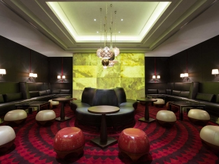

1/24 - Отель SO Hotel отличает удобное местоположение в пешей доступности от многих основных достопримечательностей Киева, таких как бульвар Тараса Шевченко и Старый Ботанический сад.
2/24 - Отель SO Hotel отличает удобное местоположение в пешей доступности от многих основных достопримечательностей Киева, таких как бульвар Тараса Шевченко и Старый Ботанический сад.
3/24 - Отель SO Hotel отличает удобное местоположение в пешей доступности от многих основных достопримечательностей Киева, таких как бульвар Тараса Шевченко и Старый Ботанический сад.
4/24 - Встречайте утро в этом светлом номере с большими французскими окнами. Погрузитесь в дела за столом или оставайтесь на связи, воспользовавшись доступом к беспроводному Интернету.
5/24 - Встречайте утро в этом светлом номере с большими французскими окнами. Поработайте за столом, воспользовавшись доступом к беспроводному Интернету (за отдельную плату), или расслабьтесь в уютной атмосфере зоны отдыха, наслаждаясь просмотром фильмов по телевизору.
6/24 - Расслабьтесь в просторном, стильном и по-домашнему уютном полулюксе, предлагающем все удобства, включая рабочую зону, гостиную и французские окна.
7/24 - Элегантный люкс с рабочей зоной, гостиной и французскими окнами.
8/24 - Отличительная особенность этого элегантного люкса — великолепный бар-гостиная с панорамным видом на Старый Ботанический сад. Насладитесь доступом в бар-гостиную бизнес-класса с бесплатным завтраком и закусками.
9/24 - Отличительная особенность этого элегантного люкса — великолепный бар-гостиная с панорамным видом на Старый Ботанический сад. Насладитесь доступом в бар-гостиную бизнес-класса с бесплатным завтраком и закусками.
10/24 - Отличительная особенность этого элегантного люкса — великолепный бар-гостиная с панорамным видом на Старый Ботанический сад. Насладитесь доступом в бар-гостиную бизнес-класса с бесплатным завтраком и закусками.
11/24 - Отличительная особенность этого элегантного люкса — великолепный бар-гостиная с панорамным видом на Старый Ботанический сад. Насладитесь доступом в бар-гостиную бизнес-класса с бесплатным завтраком и закусками.
12/2413/2414/2415/2416/24 - Многофункциональное пространство с естественным освещением, 11 сообщающихся конференц-залов и зал для закрытых совещаний делают отель идеальной площадкой для деловых и развлекательных мероприятий.
17/2418/24 - Недавно открывшийся в сердце Киева ресторан Park Kitchen — один из самых модных в городе. Ресторан задуман как сцена для кулинарного шоу от наших талантливых шеф-поваров в режиме нон-стоп. Получите удовольствие, наблюдая, как выбранное блюдо готовят прямо у вас на глазах.
19/24 - Недавно открывшийся в сердце Киева ресторан Park Kitchen — один из самых модных в городе. Ресторан задуман как сцена для кулинарного шоу от наших талантливых шеф-поваров в режиме нон-стоп. Получите удовольствие, наблюдая, как выбранное блюдо готовят прямо у вас на глазах.
20/2421/24

22/24 - В баре H, занявшем свое место на модной карте Киева, вы проведете незабываемый вечер. Зарядитесь ритмом лучших музыкальных хитов от нашего диджея и танцуйте до рассвета. Наслаждайтесь современными коктейлями, приготовленными по вашему заказу, и лучшими напитками со всего мира.
23/24 - Расслабляющая атмосфера и захватывающий вид на бульвар Тараса Шевченко и Старый Ботанический сад. Лучшее место для ваших деловых встреч, семейных событий и чаепития.
24/24
Пятизвездочный отель SO Hotel расположенный в одном из красивейших украинских городов с многовековой историей и памятниками искусства, является идеальным местом для бизнесменов и туристов.
В стильных номерах SO Hotel к Вашим услугам комфортная кровать, оборудованная рабочая зона с доступом к Интернету, LCD-телевизор и принадлежности для приготовления чая/кофе. Если Вы устали после насыщенного дня, закажите еду прямо в номер.
Номера люкс
Побалуйте себя, остановившись в одном из стильных номеров люкс. Насладитесь вкусным завтраком, напитками и закусками на протяжении всего дня в лаунж-баре бизнес-класса, поработайте или отдохните за просмотром фильма на удобной кровати.
Номера представительского класса
Выбрав номера представительского класса, гостям представится возможность индивидуальной регистрации заезда и выезда, бесплатный завтрак, доступ к закускам и напиткам на протяжении дня. Мы гарантируем Вам лучшие условия для отдыха и работы!
Номера для людей с ограниченными возможностями
Номера данной категории были специально спроектированы и оборудованы для обеспечения максимального комфорта гостей, которые нуждаются в дополнительном пространстве и удобствах. Мы сделаем все возможное, чтобы Вы почувствовали себя как дома.
Залы для проведения мероприятий
Ознакомьтесь с залами для проведения мероприятий, доступными в данном отеле.
Современный элегантный бальный зал "Dallas" вместимостью 430 персон может быть разделен на два самостоятельных помещения. Потолки высотой 5,8 метра, отсутствие колонн, встроенные LCD-экраны, звуковая система, легко демонтируемая сцена, танцпол — все это делает зал "Dallas" идеальным местом для проведения корпоративных и частных мероприятий.
Зал заседаний Amsterdam
Зал заседаний "Amsterdam" площадью 100 м² с панорамными окнами, из которых открывается прекрасный вид на Ботанический сад, может быть разделен на два отдельных помещения, вместимостью до 20 гостей. Он имеет два встроенных LCD-экрана, гардероб, звуковую систему и прямой доступ к месту для курения. Идеально подойдет для небольших фуршетов и заседаний.
Зал для деловых встреч New York
Многофункциональный зал "New York" может быть разделен на два самостоятельных помещения. К Вашим услугам естественное освещение, два встроенных LCD-экрана и звуковая система. Он идеально подойдет для небольших частных мероприятий и деловых встреч.